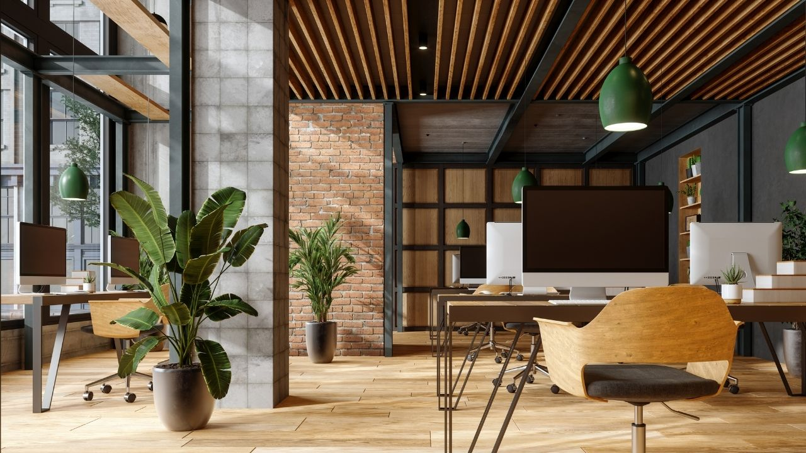
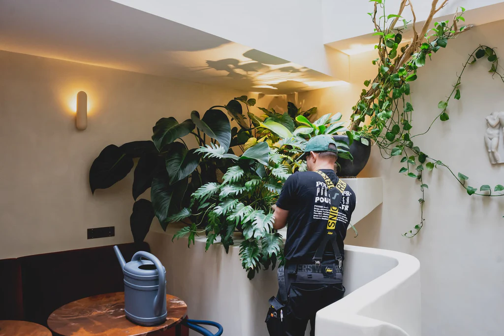

Des plantes qui font respirer vos espaces de travail et vos événements…
Ajoutez une ambiance naturelle à vos open-spaces, salles de réunion ou espaces d’accueil...
Louez des plantes adaptées à vos espaces intérieurs. Nos experts s’occupent de tout : installation, entretien, remplacement...
